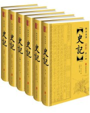
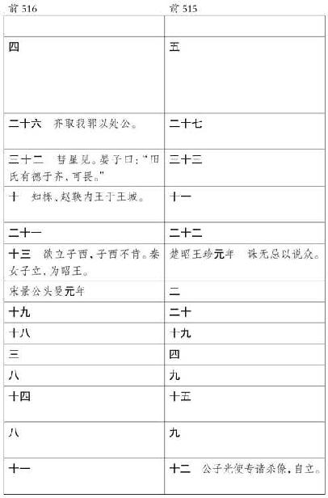
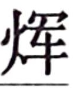

史记卷五
秦本纪第五
秦 之先，帝颛顼 之苗裔孙曰女脩 。女脩 织，玄鸟陨卵，女脩 吞之，生子大业 。大业 取少典 之子，曰女华 。女华 生大费 ，与禹 平水土。已成，帝锡玄圭。禹 受曰：“非予能成，亦大费 为辅。”帝舜 曰：“咨尔费 ，赞禹 功，其赐尔皂游。尔后嗣将大出。”乃妻之姚姓 之玉女。大费 拜受，佐舜 调驯鸟兽，鸟兽多驯服，是为柏翳 。舜 赐姓嬴氏 。
大费 生子二人：一曰大廉 ，实鸟俗氏 ；二曰若木 ，实费氏 。其玄孙曰费昌 ，子孙或在中国，或在夷狄。费昌 当夏桀 之时，去夏 归商 ，为汤 御，以败桀 于鸣条 。大廉 玄孙曰孟戏 、中衍 ，鸟身人言。帝太戊 闻而卜之使御，吉，遂致使御而妻之。自太戊 以下，中衍 之后，遂世有功，以佐殷国 ，故嬴姓 多显，遂为诸侯。
其玄孙曰中潏
，在西戎
，保西垂
。生蜚廉
。蜚廉
生恶来
。恶来
有力，蜚廉
善走，父子俱以材力事殷纣
。周武王
之伐纣
，并杀恶来
。是时蜚廉
为纣
石北方，还，无所报，为坛霍太山
而报，得石棺，铭曰“帝令处父
不与殷
乱，赐尔石棺以华氏”。死，遂葬于霍太山
。蜚廉
复有子曰季胜
。季胜
生孟增
。孟增
幸于周成王
，是为宅皋狼
。皋狼
生衡父
，衡父
生造父
。造父
以善御幸于周缪王
，得骥、温骊、骅骝、 耳之驷，西巡狩，乐而忘归。徐偃王
作乱，造父
为缪王
御，长驱归周
，一日千里以救乱。缪王
以赵城
封造父
，造父
族由此为赵氏
。自蜚廉
生季胜
已下五世至造父
，别居赵
。赵衰
其后也。恶来革
者，蜚廉
子也，蚤死。有子曰女防
。女防
生旁皋
，旁皋
生太几
，太几
生大骆
，大骆
生非子
。以造父
之宠，皆蒙赵城
，姓赵氏
。
耳之驷，西巡狩，乐而忘归。徐偃王
作乱，造父
为缪王
御，长驱归周
，一日千里以救乱。缪王
以赵城
封造父
，造父
族由此为赵氏
。自蜚廉
生季胜
已下五世至造父
，别居赵
。赵衰
其后也。恶来革
者，蜚廉
子也，蚤死。有子曰女防
。女防
生旁皋
，旁皋
生太几
，太几
生大骆
，大骆
生非子
。以造父
之宠，皆蒙赵城
，姓赵氏
。
非子
居犬丘
，好马及畜，善养息之。犬丘
人言之周孝王
，孝王
召使主马于汧渭
之间，马大蕃息。孝王
欲以为大骆
適嗣。申侯
之女为大骆
妻，生子成
为適。申侯
乃言孝王
曰：“昔我先郦山
之女，为戎胥轩
妻，生中潏
，以亲故归周
，保西垂
，西垂
以其故和睦。今我复与大骆
妻，生適子成
。申骆
重婚，西戎
皆服，所以为王。王其图之。”于是孝王
曰：“昔伯翳
为舜
主畜，
畜多息，故有土，赐姓嬴
。今其后世亦为朕息马，朕其分土为附庸。”邑之秦
，使复续嬴氏
祀，号曰秦嬴
。亦不废申侯
之女子为骆
適者，以和西戎
。
秦嬴 生秦侯 。秦侯 立十年，卒。生公伯 。公伯 立三年，卒。生秦仲 。
秦仲 立三年，周厉王 无道，诸侯或叛之。西戎 反王室，灭犬丘大骆 之族。周宣王 即位，乃以秦仲 为大夫，诛西戎 。西戎 杀秦仲 。秦仲 立二十三年，死于戎 。有子五人，其长者曰庄公 。周宣王 乃召庄公 昆弟五人，与兵七千人，使伐西戎 ，破之。于是复予秦仲 后，及其先大骆 地犬丘 并有之，为西垂 大夫。
庄公 居其故西犬丘 ，生子三人，其长男世父 。世父 曰：“戎 杀我大父仲 ，我非杀戎王 则不敢入邑。”遂将击戎 ，让其弟襄公 。襄公 为太子。庄公 立四十四年，卒，太子襄公 代立。襄公 元年，以女弟缪嬴 为丰王 妻。襄公 二年，戎 围犬丘 ，世父 击之，为戎 人所虏。岁馀，复归世父 。七年春，周幽王 用褒姒 废太子，立褒姒 子为適，数欺诸侯，诸侯叛之。西戎犬戎 与申侯 伐周 ，杀幽王郦山 下。而秦襄公 将兵救周 ，战甚力，有功。周 避犬戎 难，东徙雒邑 ，襄公 以兵送周平王 。平王 封襄公 为诸侯，赐之岐 以西之地。曰：“戎 无道，侵夺我岐 、丰 之地，秦 能攻逐戎 ，即有其地。”与誓，封爵之。襄公 于是始国，与诸侯通使聘享之礼，乃用骝驹、黄牛、羝羊各三，祠上帝西畤 。十二年，伐戎 而至岐 ，卒。生文公 。
文公 元年，居西垂宫 。三年，文公 以兵七百人东猎。四年，至汧渭 之会。曰：“昔周 邑我先秦嬴 于此，后卒获为诸侯。”乃卜居之，占曰吉，即营邑之。十年，初为鄜畤 ，用三牢。十三年，初有史以纪事，民多化者。十六年，文公 以兵伐戎 ，戎 败走。于是文公 遂收周 馀民有之，地至岐 ，岐 以东献之周 。十九年，得陈宝 。二十年，法初有三族之罪。二十七年，伐南山 大梓，丰 大特。四十八年，文公 太子卒，赐谥为竫公 。竫公 之长子为太子，是文公 孙也。五十年，文公 卒，葬西山 。竫公 子立，是为宁公 。
宁公 二年，公徙居平阳 。遣兵伐荡社 。三年，与亳战 ，亳王 奔戎 ，遂灭荡社 。四年，鲁公子翚 弑其君隐公 。十二年，伐荡氏 ，取之。宁公 生十岁立，立十二年卒，葬西山 。生子三人，长男武公 为太子。武公 弟德公 ，同母鲁姬子 。生出子 。宁公 卒，大庶长弗忌 、威垒 、三父 废太子而立出子 为君。出子 六年，三父 等复共令人贼杀出子 。出子 生五岁立，立六年卒。三父 等乃复立故太子武公 。
武公 元年，伐彭戏氏 ，至于华山 下，居平阳封宫 。三年，诛三父 等而夷 三族，以其杀出子 也。郑高渠眯 杀其君昭公 。十年，伐邽 、冀戎 ，初县之。十一年，初县杜 、郑 。灭小虢 。
十三年，齐 人管至父 、连称 等杀其君襄公 而立公孙无知 。晋 灭霍 、魏 、耿 。齐雍廪 杀无知 、管至父 等而立齐桓公 。齐 、晋 为强国。
十九年，晋曲沃 始为晋侯 。齐桓公 伯于鄄 。
二十年，武公 卒，葬雍平阳 。初以人从死，从死者六十六人。有子一人，名曰白 。白 不立，封平阳 。立其弟德公 。
德公 元年，初居雍城大郑宫 。以牺三百牢祠鄜畤 。卜居雍 。后子孙饮马于河 。梁伯 、芮伯 来朝。二年，初伏，以狗御蛊。德公 生三十三岁而立，立二年卒。生子三人：长子宣公 ，中子成公 ，少子穆公 。长子宣公 立。
宣公
元年，卫
、燕
伐周
，出惠王
，立王子颓
。三年，郑伯
、虢叔
杀子
 而入惠王
。四年，作密畤
，与晋
战河阳
，胜之。十二年，宣公
卒。生子九人，莫立，立其弟成公
。
而入惠王
。四年，作密畤
，与晋
战河阳
，胜之。十二年，宣公
卒。生子九人，莫立，立其弟成公
。
成公 元年，梁伯 、芮伯 来朝。齐桓公 伐山戎 ，次于孤竹 。
成公
立四年卒。子七人，莫立，立其弟缪公
。
缪公任好 元年，自将伐茅津 ，胜之。四年，迎妇于晋 ，晋太子申生 姊也。其岁，齐桓公 伐楚 ，至邵陵 。
五年，晋献公
灭虞
、虢
，虏虞君
与其大夫百里傒
，以璧马赂于虞
故也。既虏百里傒
，以为秦缪公
夫人媵于秦
。百里傒
亡秦
走宛
，楚
鄙人执之。缪公
闻百里傒
贤，欲重赎之，恐楚
人不与，乃使人谓楚
曰：“吾媵臣百里傒
在焉，请以五羖羊皮赎之。”楚
人遂许与之。当是时，百里傒
年已七十馀。缪公
释其囚，与语国事。谢曰：“臣亡国之臣，何足问！”缪公
曰：“虞君
不用子，故亡，非子罪也。”固问，语三日，缪公
大说，授之国政，号曰五羖大夫
。百里傒
让曰：“臣不及臣友蹇叔
，蹇叔
贤而世莫知。臣常游困于齐
而乞食
人，蹇叔
收臣。臣因而欲事齐君无知
，蹇叔
止臣，臣得脱齐
难，遂之周
。周王子
好牛，臣以养牛干之。及
欲用臣，蹇叔
止臣，臣去，得不诛。事虞君
，蹇叔
止臣。臣知虞君
不用臣，臣诚私利禄爵，且留。再用其言，得脱；一不用，及虞君
难：是以知其贤。”于是缪公
使人厚币迎蹇叔
，以为上大夫。
秋，缪公 自将伐晋 ，战于河曲 。晋骊姬 作乱，太子申生 死新城 ，重耳 、夷吾 出奔。
九年，齐桓公 会诸侯于葵丘 。
晋献公 卒。立骊姬 子奚齐 ，其臣里克 杀奚齐 。荀息 立卓子 ，克 又杀卓子 及荀息 。夷吾 使人请秦 ，求入晋 。于是缪公 许之，使百里傒 将兵送夷吾 。夷吾 谓曰：“诚得立，请割晋 之河西 八城与秦 。”及至，已立，而使丕郑 谢秦 ，背约不与河西 城，而杀里克 。丕郑 闻之，恐，因与缪公 谋曰：“晋 人不欲夷吾 ，实欲重耳 。今背秦 约而杀里克 ，皆吕甥 、郤芮 之计也。愿君以利急召吕 、郤 ，吕 、郤 至，则更入重耳 便。”缪公 许之，使人与丕郑 归，召吕 、郤 。吕 、郤 等疑丕郑 有间，乃言夷吾 杀丕郑 。丕郑 子丕豹 奔秦 ，说缪公 曰：“晋君 无道，百姓不亲，可伐也。”缪公 曰：“百姓苟不便，何故能诛其大臣？能诛其大臣，此其调也。”不听，而阴用豹 。
十二年，齐管仲 、隰朋 死。
晋 旱，来请粟。丕豹 说缪公 勿与，因其饥而伐之。缪公 问公孙支 ，支 曰：“饥穰更事耳，不可不与。”问百里傒 ，傒 曰：“夷吾 得罪于君，其百姓何罪？”于是用百里傒 、公孙支 言，卒与之粟。以船漕车转，自雍 相望至绛 。
十四年，秦 饥，请粟于晋 。晋君 谋之群臣。虢射 曰：“因其饥伐之，可有大功。”晋君 从之。十五年，兴兵将攻秦 。缪公 发兵，使丕豹 将，自往击之。九月壬戌，与晋惠公夷吾 合战于韩 地。晋君 弃其军，与秦 争利，还而马 。缪公 与麾下驰追之，不能得晋君 ，反为晋 军所围。晋 击缪公 ，缪公 伤。于是岐下 食善马者三百人驰冒晋 军，晋 军解围，遂脱缪公 而反生得晋君 。初，缪公 亡善马，岐下 野人共得而食之者三百馀人，吏逐得，欲法之。缪公 曰：“君子不以畜产害人。吾闻食善马肉不饮酒，伤人。”乃皆赐酒而赦之。三百人者闻秦 击晋 ，皆求从，从而见缪公 窘，亦皆推锋争死，以报食马之德。于是缪公 虏晋君 以归，令于国，“齐宿，吾将以晋君 祠上帝”。周天子 闻之，曰“晋 我同姓”，为请晋君 。夷吾 姊亦为缪公 夫人，夫人闻之，乃衰绖跣，曰：“妾兄弟不能相救，以辱君命。”缪公 曰：“我得晋君 以为功，今天子为请，夫人是忧。”乃与晋君 盟，许归之，更舍上舍，而馈之七牢。十一月，归晋 君夷吾 ，夷吾 献其河西 地，使太子圉 为质于秦 。秦 妻子圉 以宗女。是时秦 地东至河 。
十八年，齐桓公 卒。二十年，秦 灭梁 、芮 。
二十二年，晋公子圉 闻晋君 病，曰：“梁 ，我母家也，而秦 灭之。我兄弟多，即君百岁后，秦 必留我，而晋 轻，亦更立他子。”子圉 乃亡归晋 。二十三年，晋惠公 卒，子圉 立为君。秦 怨圉 亡去，乃迎晋公子重耳 于楚 ，而妻以故子圉 妻。重耳 初谢，后乃受。缪公 益礼厚遇之。二十四年春，秦 使人告晋 大臣，欲入重耳 。晋 许之，于是使人送重耳 。二月，重耳 立为晋君 ，是为文 公 。文公 使人杀子圉 。子圉 是为怀公 。
其秋，周襄王 弟带 以翟 伐王，王出居郑 。二十五年，周王 使人告难于晋 、秦 。秦缪公 将兵助晋文公 入襄王 ，杀王弟带 。二十八年，晋文公 败楚 于城濮 。三十年，缪公 助晋文公 围郑 。郑 使人言缪公 曰：“亡郑 厚晋 ，于晋 而得矣，而秦 未有利。晋 之强，秦 之忧也。”缪公 乃罢兵归。晋 亦罢。三十二年冬，晋文公 卒。
郑 人有卖郑 于秦 曰：“我主其城门，郑 可袭也。”缪公 问蹇叔 、百里傒 ，对曰：“径数国千里而袭人，希有得利者。且人卖郑 ，庸知我国人不有以我情告郑 者乎？不可。”缪公 曰：“子不知也，吾已决矣。”遂发兵，使百里傒 子孟明视 ，蹇叔 子西乞术 及白乙丙 将兵。行日，百里傒 、蹇叔 二人哭之。缪公 闻，怒曰：“孤发兵而子沮哭吾军，何也？”二老曰：“臣非敢沮君军。军行，臣子与往；臣老，迟还恐不相见，故哭耳。”二老退，谓其子曰：“汝军即败，必于殽 厄矣。”三十三年春，秦 兵遂东，更晋 地，过周 北门。周王孙满 曰：“秦 师无礼，不败何待！”兵至滑 ，郑 贩卖贾人弦高 ，持十二牛将卖之周 ，见秦 兵，恐死虏，因献其牛，曰：“闻大国将诛郑 ，郑君 谨修守御备，使臣以牛十二劳军士。”秦 三将军相谓曰：“将袭郑 ，郑 今已觉之，往无及已。”灭滑 。滑 ，晋 之边邑也。
当是时，晋文公 丧尚未葬。太子襄公 怒曰：“秦 侮我孤，因丧破我滑 。”遂墨衰绖，发兵遮秦 兵于殽，击之，大破秦 军，无一人得脱者。虏秦 三将以归。文公 夫人，秦 女也，为秦 三囚将请曰：“缪公 之怨此三人入于骨髓，愿令此三人归，令我君得自快烹之。”晋君 许之，归秦 三将。三将至，缪公 素服郊迎，向三人哭曰：“孤以不用百里傒 、蹇叔 言以辱三子，三子何罪乎？子其悉心雪耻，毋怠。”遂复三人官秩如故，愈益厚之。
三十四年，楚 太子商臣 弑其父成王 代立。
缪公 于是复使孟明视 等将兵伐晋 ，战于彭衙 。秦 不利，引兵归。
戎王 使由余 于秦 。由余 ，其先晋 人也，亡入戎，能晋 言。闻缪公 贤，故使由余 观秦 。秦缪公 示以宫室、积聚。由余 曰：“使鬼为之，则劳神矣。使人为之，亦苦民矣。”缪公 怪之，问曰：“中国以诗书礼乐法度为政，然尚时乱，今戎夷无此，何以为治，不亦难乎？”由余 笑曰：“此乃中国所以乱也。夫自上圣黄帝 作为礼乐法度，身以先之，仅以小治。及其后世，日以骄淫。阻法度之威，以责督于下，下罢极则以仁义怨望于上，上下交争怨而相篡弑，至于灭宗，皆以此类也。夫戎夷不然。上含淳德以遇其下，下怀忠信以事其上，一国之政犹一身之治，不知所以治，此真圣人之治也。”于是缪 公 退而问内史廖 曰：“孤闻邻国有圣人，敌国之忧也。今由余 贤，寡人之害，将奈之何？”内史廖 曰：“戎王 处辟匿，未闻中国之声。君试遗其女乐，以夺其志；为由余 请，以疏其间；留而莫遣，以失其期。戎王 怪之，必疑由余 。君臣有间，乃可虏也。且戎王 好乐，必怠于政。”缪公 曰：“善。”因与由余 曲席而坐，传器而食，问其地形与其兵势尽詧，而后令内史廖 以女乐二八遗戎王 。戎王 受而说之，终年不还。于是秦 乃归由余 。由余 数谏不听，缪公 又数使人间要由余 ，由余 遂去降秦 。缪公 以客礼礼之，问伐戎之形。
三十六年，缪公 复益厚孟明 等，使将兵伐晋 ，渡河 焚船，大败晋 人，取王官 及鄗 ，以报殽 之役。晋 人皆城守不敢出。于是缪公 乃自茅津 渡河 ，封殽 中尸，为发丧，哭之三日。乃誓于军曰：“嗟士卒！听无哗，余誓告汝。古之人谋黄发番番，则无所过。”以申思不用蹇叔 、百里傒 之谋，故作此誓，令后世以记余过。君子闻之，皆为垂涕，曰：“嗟呼！秦缪公 之与人周也，卒得孟明 之庆。”
三十七年，秦
用由余
谋伐戎王
，益国十二，开地千里，遂霸西戎
。天子使召公过
贺缪公
以金鼓。三十九年，缪公
卒，葬雍
。从死者百七十七人，秦
之良臣子舆氏
三人名曰奄息
、仲行
、 虎
，亦在从死之中。秦
人哀之，为作歌黄鸟
之诗。君子曰：“秦缪公
广地益国，东服强晋
，西霸戎夷，然不为诸侯盟主，亦宜哉。死而弃民，收其良臣而从死。且先王崩，尚犹遗德垂法，况夺之善人良臣百姓所哀者乎？是以知秦
不能复东征也。”缪公
子四十人，其太子罃
代立，是为康公
。
虎
，亦在从死之中。秦
人哀之，为作歌黄鸟
之诗。君子曰：“秦缪公
广地益国，东服强晋
，西霸戎夷，然不为诸侯盟主，亦宜哉。死而弃民，收其良臣而从死。且先王崩，尚犹遗德垂法，况夺之善人良臣百姓所哀者乎？是以知秦
不能复东征也。”缪公
子四十人，其太子罃
代立，是为康公
。
康公 元年。往岁缪公 之卒，晋襄公 亦卒；襄公 之弟名雍 ，秦 出也，在秦 。晋赵盾 欲立之，使随会 来迎雍 ，秦 以兵送至令狐 。晋 立襄公 子而反击秦 师，秦 师败，随会 来奔。二年，秦 伐晋 ，取武城 ，报令狐 之役。四年，晋 伐秦 ，取少梁 。六年，秦 伐晋 ，取羁马 。战于河曲 ，大败晋 军。晋 人患随会 在秦 为乱，乃使魏雠馀 详反，合谋会 ，诈而得会 ，会 遂归晋 。康公 立十二年卒，子共公 立。
共公 二年，晋赵穿 弑其君灵公 。三年，楚庄王 强，北兵至雒 ，问周 鼎。共公 立五年卒，子桓公 立。
桓公 三年，晋 败我一将。十年，楚庄王 服郑 ，北败晋 兵于河 上。当是之时，楚 霸，为会盟合诸侯。二十四年，晋厉公 初立，与秦桓公 夹河 而盟。归而秦 倍盟，与翟 合谋击晋 。二十六年，晋 率诸侯伐秦 ，秦 军败走，追至泾 而还。桓公 立二十七年卒，子景公 立。
景公
四年，晋栾书
弑其君厉公
。十五年，救郑
，败晋
兵于栎
。是时晋
悼公
为盟主。十八年，晋悼公
强，数会诸侯，率以伐秦
，败秦
军。秦
军走，晋
兵追之。遂渡泾
，至械林而还。二十七年，景公
如晋，与平公
盟，已而背之。三十六年，楚公子围
弑其君而自立，是为灵王
。景公
母弟后子
有宠，景公
母弟富，或谮之，恐诛，乃奔晋
，车重千乘。晋平公
曰：“后子
富如此，何以自亡？”对曰：“秦公
无道，畏诛，欲待其后世乃归。”三十九年，楚灵王
强，会诸侯于申
，为盟主，杀齐庆封
。景公
立四十年卒，子哀公
立。后子
复来归秦
。
哀公 八年，楚公子弃疾 弑灵王 而自立，是为平王 。十一年，楚平王 来求秦 女为太子建 妻。至国，女好而自娶之。十五年，楚平王 欲诛建 ，建 亡；伍子胥 奔吴 。晋 公室卑而六卿强，欲内相攻，是以久秦晋 不相攻。三十一年，吴王阖闾 与伍子胥 伐楚 ，楚王 亡奔随 ，吴 遂入郢 。楚 大夫申包胥 来告急，七日不食，日夜哭泣。于是秦 乃发五百乘救楚 ，败吴 师。吴 师归，楚昭王 乃得复入郢 。哀公 立三十六年卒。太子夷公 ，夷公 蚤死，不得立，立夷公 子，是为惠公 。
惠公 元年，孔子 行鲁 相事。五年，晋 卿中行 、范氏 反晋 ，晋 使智氏 、赵简子 攻之，范 、中行氏 亡奔齐 。惠公 立十年卒，子悼公 立。
悼公 二年，齐 臣田乞 弑其君孺子 ，立其兄阳生 ，是为悼公 。六年，吴 败齐 师。齐 人弑悼公 ，立其子简公 。九年，晋定公 与吴王夫差 盟，争长于黄池 ，卒先吴 。吴 强，陵中国。十二年，齐田常 弑简公 ，立其弟平公 ，常 相之。十三年，楚 灭陈 。秦悼公 立十四年卒，子厉共公 立。孔子 以悼公 十二年卒。
厉共公 二年，蜀 人来赂。十六年，堑河 旁。以兵二万伐大荔 ，取其王城 。二十一年，初县频阳 。晋 取武成 。二十四年，晋 乱，杀智伯 ，分其国与赵 、韩 、魏 。二十五年，智开 与邑人来奔。三十三年，伐义渠 ，虏其王。三十四年，日食。厉共公 卒，子躁公 立。
躁公 二年，南郑 反。十三年，义渠 来伐，至渭南 。十四年，躁公 卒，立其弟怀公 。
怀公 四年，庶长鼌 与大臣围怀公 ，怀公 自杀。怀公 太子曰昭子 ，蚤死，大臣乃立太子昭子 之子，是为灵公 。灵公 ，怀公 孙也。
灵公 六年，晋 城少梁 ，秦 击之。十三年，城籍姑 。灵公 卒，子献公 不得立，立灵公 季父悼子 ，是为简公 。简公 ，昭子 之弟而怀公 子也。
简公 六年，令吏初带剑。堑洛 。城重泉 。十六年卒，子惠公 立。
惠公 十二年，子出子 生。十三年，伐蜀 ，取南郑 。惠公 卒，出子 立。
出子 二年，庶长改 迎灵公 之子献公 于河西 而立之。杀出子 及其母，沉之渊旁。秦 以往者数易君，君臣乖乱，故晋 复强，夺秦河西 地。
献公 元年，止从死。二年，城栎阳 。四年正月庚寅，孝公 生。十一年，周太史儋 见献公 曰：“周 故与秦国 合而别，别五百岁复合，合十七岁而霸王出。”十六年，桃冬花。十八年，雨金栎阳 。二十一年，与晋 战于石门 ，斩首六万，天子贺以黼黻。二十三年，与魏晋 战少梁 ，虏其将公孙痤 。二十四年，献公 卒，子孝公 立，年已二十一岁矣。
孝公 元年，河 山以东强国六，与齐威 、楚宣 、魏惠 、燕悼 、韩哀 、赵成侯 并。淮泗 之间小国十馀。楚 、魏 与秦 接界。魏 筑长城，自郑 滨洛 以北，有上郡 。楚 自汉中 ，南有巴 、黔中 。周室 微，诸侯力政，争相并。秦 僻在雍州 ，不与中国诸侯之会盟，夷翟遇之。孝公 于是布惠，振孤寡，招战士，明功赏。下令国中曰：“昔我缪公 自岐雍 之间，修德行武，东平晋 乱，以河 为界，西霸戎翟，广地千里，天子致伯，诸侯毕贺，为后世开业，甚光美。会往者厉 、躁 、简公 、出子 之不宁，国家内忧，未遑外事，三晋 攻夺我先君河西 地，诸侯卑秦 ，丑莫大焉。献公 即位，镇抚边境，徙治栎阳 ，且欲东伐，复缪公 之故地，修缪公 之政令。寡人思念先君之意，常痛于心。宾客群臣有能出奇计强秦 者，吾且尊官，与之分土。”于是乃出兵东围陕城 ，西斩戎之獂王 。
卫鞅 闻是令下，西入秦 ，因景监 求见孝公 。
二年，天子致胙。
三年，卫鞅 说孝公 变法修刑，内务耕稼，外劝战死之赏罚，孝公 善之。甘龙 、杜挚 等弗然，相与争之。卒用鞅 法，百姓苦之；居三年，百姓便之。乃拜鞅 为左庶长。其事在商君 语中。
七年，与魏惠王 会杜平 。八年，与魏 战元里 ，有功。十年，卫鞅 为大良造，将兵围魏安邑 ，降之。十二年，作为咸阳 ，筑冀阙，秦 徙都之。并诸小乡聚，集为大县，县一令，四十一县。为田开阡陌。东地渡洛 。十四年，初为赋。十九年，天子致伯。二十年，诸侯毕贺。秦 使公子少官 率师会诸侯逢泽 ，朝天子。
二十一年，齐 败魏马陵 。
二十二年，卫鞅 击魏 ，虏魏公子卬 。封鞅 为列侯，号商君 。
二十四年，与晋 战雁门 ，虏其将魏错 。
孝公
卒，子惠文君
立。是岁，诛卫鞅
。鞅
之初为秦
施法，法不行，太子犯禁。鞅
曰：“法之不行，自于贵戚。君必欲行法，先于太子。太子不可
黥，黥其傅师。”于是法大用，秦
人治。及孝公
卒，太子立，宗室多怨鞅
，鞅
亡，因以为反，而卒车裂以徇秦国
。
惠文君 元年，楚 、韩 、赵 、蜀 人来朝。二年，天子贺。三年，王冠。四年，天子致文武 胙。齐 、魏 为王。
五年，阴晋 人犀首 为大良造。六年，魏 纳阴晋 ，阴晋 更名宁秦 。七年，公子卬 与魏 战，虏其将龙贾 ，斩首八万。八年，魏 纳河西 地。九年，渡河 ，取汾阴 、皮氏 。与魏王 会应。围焦 ，降之。十年，张仪 相秦 。魏 纳上郡 十五县。十一年，县义渠 。归魏焦 、曲沃 。义渠君 为臣。更名少梁 曰夏阳 。十二年，初腊。十三年四月戊午，魏君 为王，韩 亦为王。使张仪 伐取陕 ，出其人与魏 。
十四年，更为元年。二年，张仪 与齐 、楚 大臣会啮桑 。三年，韩 、魏 太子来朝。张仪 相魏 。五年，王游至北河 。七年，乐池 相秦 。韩 、赵 、魏 、燕 、齐 帅匈奴 共攻秦 。秦 使庶长疾 与战修鱼 ，虏其将申差 ，败赵公子渴 、韩太子奂 ，斩首八万二千。八年，张仪 复相秦 。九年，司马错 伐蜀 ，灭之。伐取赵中都 、西阳 。十年，韩太子苍 来质。伐取韩石章 。伐败赵 将泥 。伐取义渠 二十五城。十一年，㯉里疾 攻魏焦 ，降之。败韩岸门 ，斩首万，其将犀首 走。公子通 封于蜀 。燕君 让其臣子之 。十二年，王与梁王 会临晋 。庶长疾 攻赵 ，虏赵 将庄 。张仪 相楚 。十三年，庶长章 击楚 于丹阳 ，虏其将屈匄 ，斩首八万；又攻楚汉中 ，取地六百里，置汉中郡 。楚 围雍氏 ，秦 使庶长疾 助韩 而东攻齐 ，到满 助魏 攻燕 。十四年，伐楚 ，取召陵 。丹 、犁 臣，蜀 相壮 杀蜀侯 来降。
惠王
卒，子武王
立。韩
、魏
、齐
、楚
、越
皆宾从。
武王 元年，与魏惠王 会临晋 。诛蜀 相壮 。张仪 、魏章 皆东出之魏 。伐义渠 、丹 、犁 。二年，初置丞相，㯉里疾 、甘茂 为左右丞相。张仪 死于魏 。三年，与韩襄王 会临晋 外。南公揭 卒，滹里疾 相韩 。武王 谓甘茂 曰：“寡人欲容车通三川 ，窥周室 ，死不恨矣。”其秋，使甘茂 、庶长封 伐宜阳 。四年，拔宜阳 ，斩首六万。涉河 ，城武遂 。魏太子 来朝。武王 有力好戏，力士任鄙 、乌获 、孟说 皆至大官。王与孟说 举鼎，绝膑。八月，武王 死。族孟说 。武王 取魏 女为后，无子。立异母弟，是为昭襄王 。昭襄 母楚 人，姓芈氏 ，号宣太后 。武王 死时，昭襄王 为质于燕 ，燕 人送归，得立。
昭襄王
元年，严君疾
为相。甘茂
出之魏
。二年，彗星见。庶长壮
与大
臣、诸侯、公子为逆，皆诛，及惠文后
皆不得良死。悼武王后
出归魏
。三年，王冠。与楚王
会黄棘
，与楚上庸
。四年，取蒲阪
。彗星见。五年，魏王
来朝应亭
，复与魏蒲阪
。六年，蜀侯

反，司马错
定蜀
。庶长奂
伐楚
，斩首二万。泾阳君
质于齐
。日食，昼晦。七年，拔新城
。㯉里子
卒。八年，使将军 戎
攻楚
，取新市
。齐
使章子
，魏
使公孙喜
，韩
使暴鸢
共攻楚方城
，取唐眛
。赵
破中山
，其君亡，竟死齐
。魏公子劲
、韩公子长
为诸侯。九年，孟尝君薛文
来相秦
。奂
攻楚
，取八城，杀其将景快
。十年，楚怀王
入朝秦
，秦
留之。薛文
以金受
免。楼缓
为丞相。十一年，齐
、韩
、魏
、赵
、宋
、中山
五国共攻秦
，至盐氏
而还。秦
与韩
、魏河
北及封陵
以和。彗星见。楚怀王
走之赵
，赵
不受，还之秦
，即死，归葬。十二年，楼缓
免，穰侯魏
戎
攻楚
，取新市
。齐
使章子
，魏
使公孙喜
，韩
使暴鸢
共攻楚方城
，取唐眛
。赵
破中山
，其君亡，竟死齐
。魏公子劲
、韩公子长
为诸侯。九年，孟尝君薛文
来相秦
。奂
攻楚
，取八城，杀其将景快
。十年，楚怀王
入朝秦
，秦
留之。薛文
以金受
免。楼缓
为丞相。十一年，齐
、韩
、魏
、赵
、宋
、中山
五国共攻秦
，至盐氏
而还。秦
与韩
、魏河
北及封陵
以和。彗星见。楚怀王
走之赵
，赵
不受，还之秦
，即死，归葬。十二年，楼缓
免，穰侯魏
 为相。予楚
粟五万石。
为相。予楚
粟五万石。
十三年，向寿
伐韩
，取武始
。左更白起
攻新城
。五大夫礼
出亡奔魏
。任鄙
为汉中
守。十四年，左更白起
攻韩
、魏
于伊阙
，斩首二十四万，虏公孙喜
，拔五城。十五年，大良造白起
攻魏
，取垣
，复予之。攻楚
，取宛
。十六年，左更错
取轵
及邓
。冉
免。封公子巿宛
，公子悝邓
，魏冉陶
，为诸侯。十七年，城阳君
入朝，及东周君
来朝。秦
以垣
为蒲阪
、皮氏
。王之宜阳
。十八年，错
攻垣
、河雍
，决桥取之。十九年，王为西帝，齐
为东帝，皆复去之。吕礼
来自归。齐
破宋
，宋王
在魏
，死温
。任鄙
卒。二十年，王之汉中
，又之上郡
、北河
。二十一年，错
攻魏河内
。魏
献安邑
，秦
出其人，募徙河东
赐爵，赦罪人迁之。泾阳君
封宛。二十二年，蒙武
伐齐
。河东
为九县。与楚王
会宛
。与赵王
会中阳
。二十三年，尉斯离
与三晋
、燕
伐齐
，破之济
西。王与魏王
会宜阳
，与韩王
会新城
。二十四年，与楚王
会鄢
，又会穰
。秦
取魏安城
，至大梁
，燕
、赵
救之，秦
军去。魏冉
免相。二十五年，拔赵
二城。与韩王
会新城
，与魏王
会新明邑
。二十六年，赦罪人迁之穰
。侯
复相。二十七年，错
攻楚
。赦罪人迁之南阳
。白起
攻赵
，取代光狼城
。又使司马错
发陇西
，因蜀
攻楚黔中
，拔之。二十八年，大良造白起
攻楚
，取鄢
、邓
，赦罪人迁之。二十九年，大良造白起
攻楚
，取郢
为南郡
，楚王
走。周君
来。王与楚王
会襄陵
。白起
为武安君
。三十年，蜀
守若
伐楚
，取巫郡
，及江南
为黔中郡
。三十一年，白起
伐魏
，取两城。楚
人反我江南
。三十二年，相穰侯
攻魏
，至大梁
，破暴鸢
，斩首四万，鸢
走，魏
入三县请和。三十三年，客卿胡阳
攻魏卷
、蔡阳
、长社
，取之。击芒卯华阳
，破之，斩首十五万。魏
入南阳
以和。三十四年，秦
与魏
、韩上庸
地为一郡，南阳
免臣迁居之。三十五年，佐韩
、魏
、楚
伐燕
。初置南阳郡
。三十六年，客卿灶
攻齐
，取刚
、寿
，
予穰侯
。三十八年，中更胡阳
攻赵阏与
，不能取。四十年，悼太子
死魏
，归葬芷阳
。四十一年夏，攻魏
，取邢丘
、怀
。四十二年，安国君
为太子。十月，宣太后
薨，葬芷阳郦山
。九月，穰侯
出之陶
。四十三年，武安君白起
攻韩
，拔九城，斩首五万。四十四年，攻韩南阳
，取之。四十五年，五大夫贲
攻韩
，取十城。叶阳君悝
出之国，未至而死。四十七年，秦
攻韩上党
，上党
降赵
，秦
因攻赵
，赵
发兵击秦
，相距。秦
使武安君白起
击，大破赵
于长平
，四十馀万尽杀之。四十八年十月，韩
献垣雍
。秦
军分为三军。武安君
归。王龁
将伐赵武安
、皮牢
，拔之。司马梗
北定太原
，尽有韩上党
。正月，兵罢，复守上党
。其十月，五大夫陵
攻赵邯郸
。四十九年正月，益发卒佐陵
。陵
战不善，免，王龁
代将。其十月，将军张唐
攻魏
，为蔡尉
捐弗守，还斩之。五十年十月，武安君白起
有罪，为士伍，迁阴密
。张唐
攻郑
，拔之。十二月，益发卒军汾城
旁。武安君白起
有罪，死。龁
攻邯郸
，不拔，去，还奔汾
军二月馀。攻晋
军，斩首六千，晋楚
流死河
二万人。攻汾城
，即从唐
拔宁新中
，宁新中
更名安阳
。初作河
桥。
五十一年，将军摎 攻韩 ，取阳城 、负黍 ，斩首四万。攻赵 ，取二十余县，首虏九万。西周君 背秦 ，与诸侯约从，将天下锐兵出伊阙 攻秦 ，令秦 毋得通阳城 。于是秦 使将军摎 攻西周 。西周君 走来自归，顿首受罪，尽献其邑三十六城，口三万。秦王 受献，归其君于周 。五十二年，周 民东亡，其器九鼎入秦 。周 初亡。
五十三年，天下来宾。魏 后，秦 使摎 伐魏 ，取吴城 。韩王 入朝，魏 委国听令。五十四年，王郊见上帝于雍 。五十六年秋，昭襄王 卒，子孝文王 立。尊唐八子 为唐太后 ，而合其葬于先王。韩王 衰绖入吊祠，诸侯皆使其将相来吊祠，视丧事。
孝文王 元年，赦罪人，修先王功臣，褒厚亲戚，弛苑囿。孝文王 除丧，十月己亥即位，三日辛丑卒，子庄襄王 立。
庄襄王 元年，大赦罪人，修先王功臣，施德厚骨肉而布惠于民。东周君 与诸侯谋秦 ，秦 使相国吕不韦 诛之，尽入其国。秦 不绝其祀，以阳人 地赐周君 ，奉其祭祀。使蒙骜 伐韩 ，韩 献成皋 、巩 。秦 界至大梁 ，初置三川郡 。二年，使蒙骜 攻赵 ，定太原 。三年，蒙骜 攻魏高都 、汲 ，拔之。攻赵榆次 、新城 、狼孟 ，取三十七城。四月日食。王龁 攻上党 。初置太原郡 。魏 将无忌 率五国兵击秦 ，秦 却于河 外。蒙骜 败，解而去。五月丙午，庄襄王 卒，子政 立，是为秦始皇帝 。
秦王政
立二十六年，初并天下为三十六郡，号为始皇帝
。始皇帝
五十
一年而崩，子胡亥
立，是为二世皇帝
。三年，诸侯并起叛秦
，赵高
杀二世，立子婴
。子婴
立月馀，诸侯诛之，遂灭秦
。其语在始皇本纪
中。
太史公 曰：秦 之先为嬴姓 。其后分封，以国为姓，有徐氏 、郯氏 、莒氏 、终黎氏 、运奄氏 、菟裘氏 、将梁氏 、黄氏 、江氏 、脩鱼氏 、白冥氏 、蜚廉氏 、秦氏 。然秦 以其先造父 封赵城 ，为赵氏 。